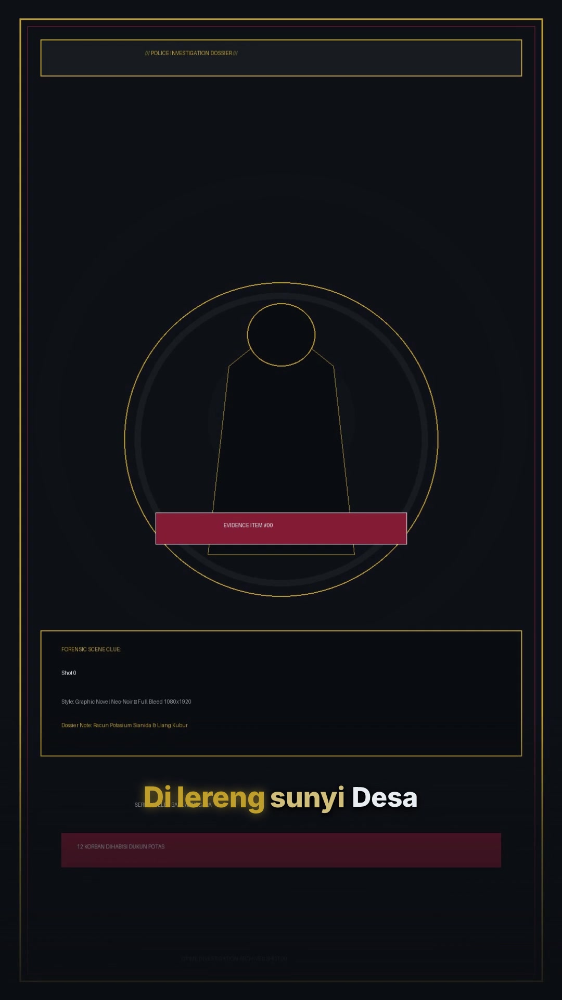
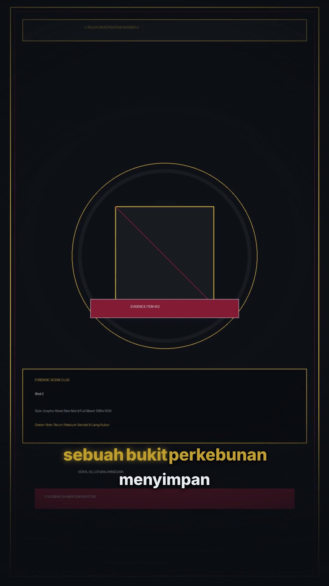
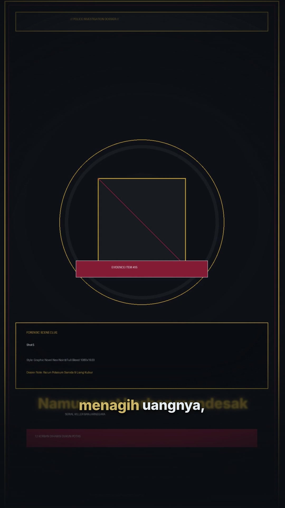
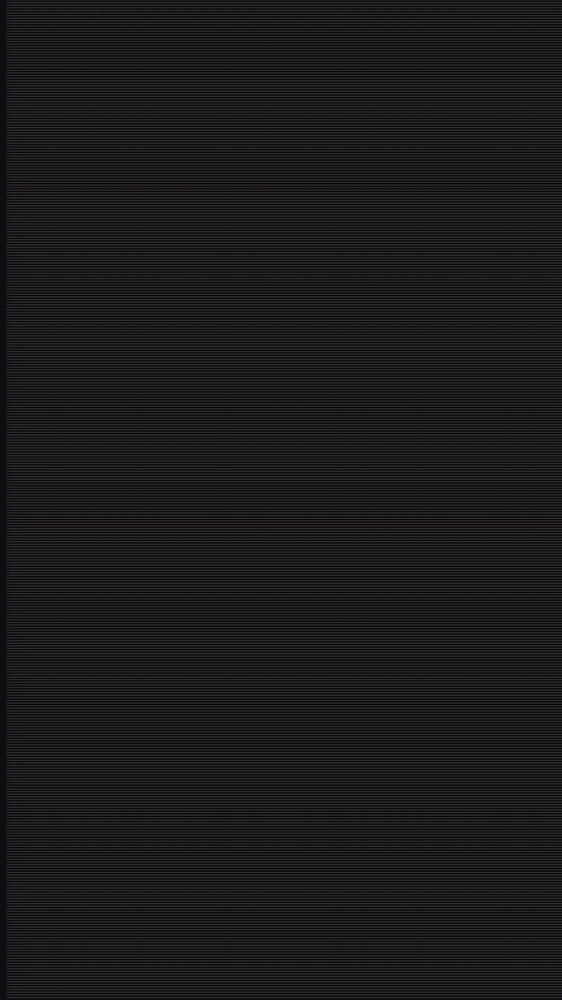
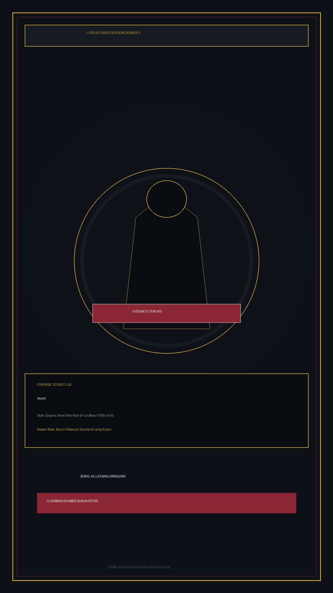
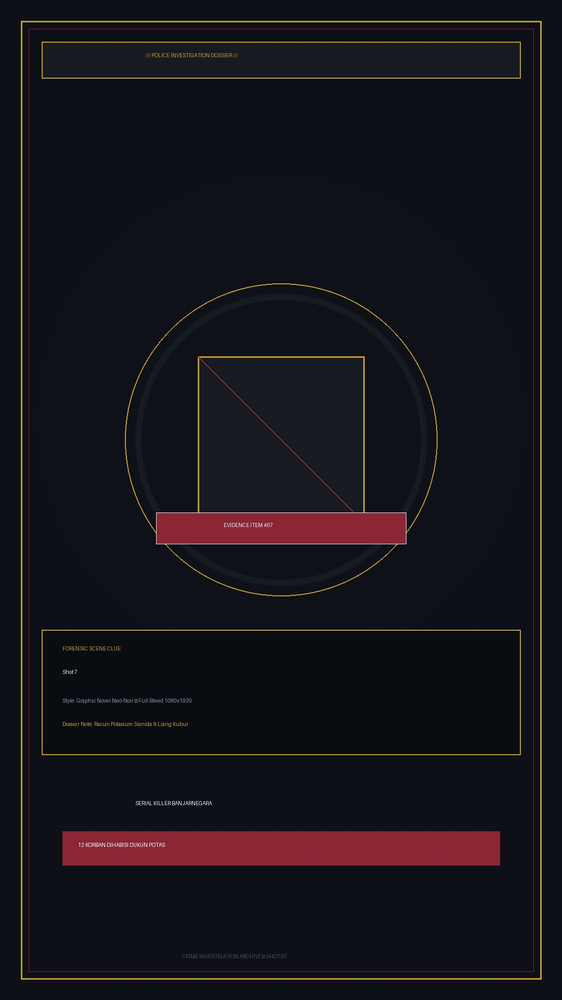
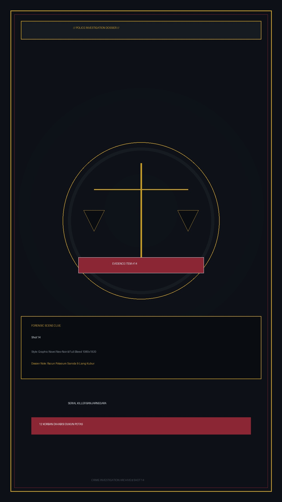

SERIAL KILLER BANJARNEGARA: 12 Korban Dukun Pengganda Uang Mbah Slamet
Kasus: Mbah Slamet Tohari (Dukun Pengganda Uang Banjarnegara Dituntut Pidana Mati) • Durasi: 54.0 Detik
Final Video (HyperFrames + Charon VO + BGM 20% + SFX)
Video 9:16 vertikal dengan 14 shot kamera dinamis, autocaption bawah tersinkronisasi, dan audio broadcast-normalized.
Dengarkan langsung instrumen BGM tanpa narasi (Cello pulse, piano eerie Mindhunter, ticking clock, dark pad D-minor):
- Autocaption Kata-per-Kata: Frasa pendek (maks 4 kata) tersinkronisasi karaoke dengan highlight emas (#C59B27) & scale up subtle persis project benchmark pertama
- Cover Video Menarik (Awal): Poster visual sinematik dengan tipografi terintegrasi "SERIAL KILLER BANJARNEGARA" & cangkir racun di awal video (0.0s – 1.3s)
- Resolusi: 1080 × 1920 (9:16 Vertical Shorts/Reels)
- Backsound Dramatis (BGM): Cinematic Crime Thriller (D-minor 80 BPM, volume 20% (Subtle Bed))
- Transisi Visual: Noir Forensic Glitch (Distorsi scanline & chromatic aberration 0.18s di 14 titik)
- Sound Effect: Injeksi audio whoosh & glitch hit tersinkronisasi persis dengan transisi visual
- Kamera: Smooth Ken Burns choreography per shot (Push-in, Creep, Pan, Tilt)
- Voice Over: Charon (Deep Authority) • 48kHz Stereo • Broadcast -16 LUFS
Verifikasi Frame • Autocaption Karaoke Kata-per-Kata
Frasa pendek (maks 4 kata) • Highlight emas #C59B27 • Area Bawah 300px



Paket Caption & Metadata Media Sosial
Caption optimal dengan hook emosional, ringkasan kronologi, CTA interaksi, dan tagar berkinerja tinggi untuk YouTube Shorts, TikTok, dan Instagram Reels.
Di lereng perbukitan Desa Balun, Wanayasa, Banjarnegara, terbongkar kasus pembunuhan berantai paling menggemparkan di Jawa Tengah. Slamet Tohari alias Mbah Slamet, seorang dukun pengganda uang, tega meracuni 12 korban dengan racun potasium sianida saat ritual fiktif penarikan uang gaib di perkebunan petang hari. Jejak mautnya akhirnya terbongkar setelah korban terakhir bernama Paryanto sempat mengirimkan lokasi terkini (sharelock) dan pesan waspada kepada sang anak. Polisi menggali 12 liang lahat, dan kini Jaksa Penuntut Umum resmi menuntut sang serial killer dengan hukuman mati di Pengadilan Negeri Banjarnegara. Bagikan pendapatmu di kolom komentar: apa yang membuat tipu daya dukun pengganda uang masih begitu mudah memakan korban? #MbahSlamet #SerialKillerBanjarnegara #TrueCrimeIndonesia #KasusKriminal #InvestigasiKriminal #BeritaKriminal #DetikJateng #Banjarnegara #KriminalJateng #HukumDanKriminal #Shorts

Teks besar "SERIAL KILLER BANJARNEGARA" dengan cangkir racun potasium sianida dan siluet Mbah Slamet.

Visual scene 1 • Transisi Noir Glitch • Ken Burns Motion

Visual scene 2 • Transisi Noir Glitch • Ken Burns Motion

Visual scene 3 • Transisi Noir Glitch • Ken Burns Motion

Visual scene 4 • Transisi Noir Glitch • Ken Burns Motion

Visual scene 5 • Transisi Noir Glitch • Ken Burns Motion

Visual scene 6 • Transisi Noir Glitch • Ken Burns Motion

Visual scene 7 • Transisi Noir Glitch • Ken Burns Motion

Visual scene 8 • Transisi Noir Glitch • Ken Burns Motion

Visual scene 9 • Transisi Noir Glitch • Ken Burns Motion

Visual scene 10 • Transisi Noir Glitch • Ken Burns Motion

Visual scene 11 • Transisi Noir Glitch • Ken Burns Motion

Visual scene 12 • Transisi Noir Glitch • Ken Burns Motion
Visual scene 13 • Transisi Noir Glitch • Ken Burns Motion

Visual scene 14 • Transisi Noir Glitch • Ken Burns Motion